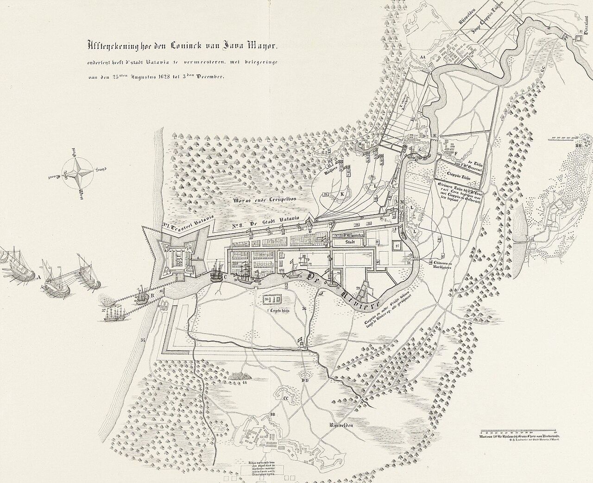

Dua Pengepungan Batavia: Gelora Palagan 1628 dan 1629
Dua kali Mataram tiba di depan tembok Kasteel Batavia. Taktik parit galian, blokade Ciliwung, sabotase rantai lumbung beras, hingga kemelut wabah yang mengguncang VOC dan merenggut nyawa Jan Pieterszoon Coen.
Pendaratan Bahureksa dan Pengepungan Pertama
Sebanyak 59 kapal di bawah komando Tumenggung Bahureksa merapat di perairan Batavia dengan dalih izin berlayar ke Malaka, memicu serangan mendadak yang mengejutkan pertahanan serdadu VOC.
Strategi Maritim Bahureksa
Pada 22 Agustus 1628, 59 perahu Mataram muncul di muara. Tumenggung Bahureksa meminta izin berlayar menuju Ternate, namun pada malam 25 Agustus, armada kedua pimpinan Pangeran Mandurareja mendarat dengan kekuatan 10.000 prajurit tambahan.
"Pribumi bergerak maju bagai semut tanpa gentar terhadap dentuman mesiu kita; mereka menimbun rawa dengan batang kelapa untuk membuka jalan meriam..."
Hambatan Pasokan >500 KM
Pasukan mengandalkan jalur lintas darat pedalaman Jawa yang berlumpur dan rawan. Tanpa rantai pasokan permanen di paruh barat, ransum habis sebelum dinding batu Kasteel berhasil ditembus.
Epidemi Rawa dan Kolera
Batavia abad ke-17 dikelilingi rawa payau berhawa lembab. Pembendungan sungai Ciliwung justru menjadi bumerang, menciptakan sarang malaria dan disentri parah di kamp perkemahan Mataram sendiri.
Gugurnya Tumenggung Bahureksa
Dalam serbuan puncak ke arah Bastion Hollandia dan tembok timur, sang panglima gugur tersambar peluru meriam. Kematian komandan meruntuhkan koordinasi taktis dan memaksa mundurnya laskar ke timur.
Ekspedisi Kedua dan Sabotase Lumbung Padi Pantura
Belajar dari kehancuran logistik 1628, Sultan Agung merancang rantai pangkalan lumbung beras sepanjang pesisir utara Jawa, dipimpin oleh Adipati Juminah dan Dipati Ukur.
Karawang
Diproyeksikan sebagai lumbung terdekat (~50 km dari Batavia). Pasukan pelopor di bawah Dipati Ukur menanam ribuan hektar padi sawah secara kilat.
Cirebon
Pusat konsentrasi armada perahu pengangkut logistik dan perbengkelan artileri di bawah perlindungan kerabat keraton Cirebon sekutu Mataram.
Indramayu
Pusat penimbunan padi giling dari daerah pedalaman Priangan timur. Ribuan ton gabah ditampung di dekat muara Cimanuk.
Tegal
Pangkalan militer sentral Kiai Adipati Juminah. Lokasi persinggahan utama prajurit infanteri dari Kutagede sebelum melanjutkan gerak maju.
Sabotase Sloop VOC dan Hangusnya Lumbung Pantura
Mengetahui strategi lumbung dari mata-mata dan interogasi tawanan nelayan, Gubernur Jenderal Jan Pieterszoon Coen memerintahkan armada kecil kapal cepat (sloop) di bawah perwira seperti Antonio van Diemen untuk melancarkan serangan pembakaran rahasia.
- check_circle Juli 1629: Armada patroli membakar lebih dari 200 perahu logistik Mataram di lepas pantai Cirebon.
- check_circle Agustus 1629: Pasukan pendarat VOC membumihanguskan lumbung Karawang dan Tegal, melenyapkan ribuan ton gabah cadangan prajurit sebelum meriam ditembakkan.
- check_circle Kekalahan Taktis: Pasukan Mataram tiba di Batavia dalam kondisi krisis logistik akut bahkan sebelum pertempuran pembuka dimulai.

Wafatnya J.P. Coen dan Klimaks Pertempuran 1629
Di tengah kepungan parit Mataram dan merebaknya wabah mematikan di dalam benteng, Gubernur Jenderal Jan Pieterszoon Coen mengembuskan napas terakhirnya secara mendadak.
Mobilisasi Pantura
Gelombang pertama berkekuatan 14.000 prajurit di bawah Dipati Ukur bergerak ke Karawang, disusul induk pasukan Kiai Adipati Juminah dari pedalaman Yogyakarta.
Pengepungan Rapat dan Blokade Air
Pasukan Mataram membendung Kali Ciliwung dan melemparkan bangkai binatang guna mengotori pasokan air benteng, memicu wabah muntaber massal di dalam Kasteel Batavia.
Wafatnya Sang Arsitek Kolonial
Gubernur Jenderal Jan Pieterszoon Coen wafat secara tiba-tiba di ranjangnya di dalam Kasteel, di tengah kecamuk dentuman meriam dan krisis sanitasi ekstrem.
Teka-Teki Sebab Kematian: Versi VOC vs. Babad Mataram
Catatan resmi VOC mencatat bahwa Gubernur Jenderal menderita serangan akut kolera/disentri (rode loop) yang sedang berkecamuk hebat di pemukiman Eropa. Coen roboh setelah beberapa hari mengalami demam hebat dan dehidrasi, tanpa luka tusukan senjata Mataram.
Karya sastra keraton mengabadikan kisah infiltrasi legendaris telik sandi (mata-mata sakti) Mataram yang mampu menembus kamar tidur Coen di dalam benteng paling kokoh, memenggal kepala sang jenderal, dan membawanya kembali ke Keraton Karta sebagai bukti baktinya pada titah Sinuhun.
Meskipun benteng Kasteel Batavia gagal diruntuhkan secara fisik karena keterbatasan logistik pangan, wafatnya Jan Pieterszoon Coen memberi pukulan psikologis masif terhadap hegemoni awal VOC di Asia Tenggara. Bagi Mataram, ekspedisi ini mengukuhkan Sultan Agung sebagai penguasa berdaulat tanah Jawa yang menolak tunduk pada monopoli rempah kompeni.